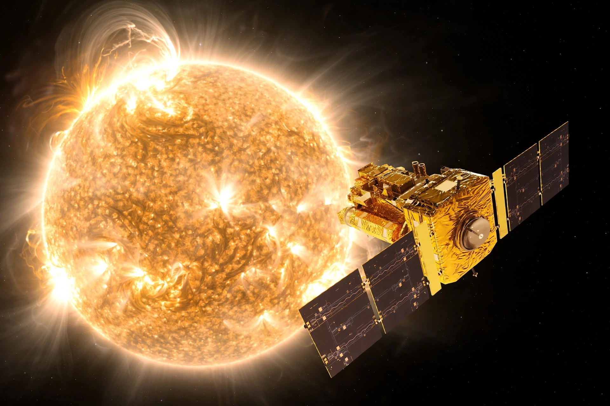

| Solar and Heliospheric Observatory (SOHO) | |
|---|---|
| Operator | ESA / NASA |
| Launched | 2 December 1995 (Atlas IIAS) |
| Orbit | Halo orbit around the Sun–Earth L1 point |
| Instruments | 12, incl. LASCO, EIT, MDI |
| Famous for | Coronagraph images; thousands of comet discoveries |

The Solar and Heliospheric Observatory (SOHO) is a European Space Agency spacecraft built in collaboration with NASA to study the Sun from its deep core to the outer corona and solar wind. Launched on 2 December 1995, SOHO operates from a halo orbit around the Sun–Earth L1 Lagrange point, about 1.5 million km from Earth, where it enjoys an uninterrupted view of the Sun. Originally a two-year mission, it has operated for decades far beyond its design life.
SOHO carries twelve instruments. LASCO, a set of coronagraphs that block the Sun's disk — an artificial solar eclipse — images the corona and has discovered more than 5,000 comets, most of them sungrazers of the Kreutz group plunging toward the Sun; many were found by citizen scientists examining public data. The EIT telescope images the solar disk in ultraviolet, MDI/SOI mapped sound waves in the Sun (helioseismology) revealing internal rotation, and UVCS, SUMER and other spectrometers probe the corona and solar wind. SOHO data underpin modern space-weather monitoring, giving early warning of coronal mass ejections heading for Earth.
On 25 June 1998, during routine calibration, ground controllers lost contact with SOHO and the spacecraft began spinning, its solar panels edge-on to the Sun. In a celebrated recovery effort, engineers located it by radar, thawed frozen fuel and restored control by September 1998; remarkably, all instruments survived, though gyroscope failures later forced a gyroless control mode — SOHO remains in service.
This article was recreated from memory as part of a web-reconstruction exercise.